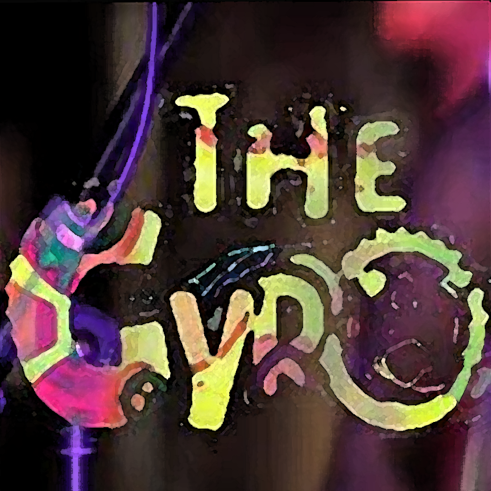

The Gyro Band
The main public home for the band's identity, releases, visuals, and future announcements.


The Gyro music world
The Gyro is an organic band site first. Around it sits a growing music ecosystem: GrandPiano for learning and reading music, future books, a dedicated audio player app, and more tools that connect listening, study, and performance.
App
GrandPiano
Input
USB / BLE / QWERTY
Reading
Score + Live Staff
The website needs to promote The Gyro properly, while giving visitors a direct route into the current and upcoming product lineup.
The main public home for the band's identity, releases, visuals, and future announcements.
A fast piano learning app with lessons, sheet music, live score, virtual keyboard, and external MIDI input support.
Built to help players read notation, understand rhythm, and connect sound with what they see on the staff.
The site is structured to add more music apps, books, and listening tools without fragmenting the overall experience.
The Gyro site now acts as a bridge between the band and the tools around it. Visitors can discover the music, move into structured practice, and later access more learning and listening products from the same home.
Live Now
GrandPiano
Band Platform
The Gyro ecosystem
Music site, apps, books, and player tools under one brand.
GrandPiano is the first live app. The next slots are reserved now so the site already communicates where the platform is heading.
Live
Piano lessons, falling notes, sheet music mode, live performance score, and fast browser play.
Open appPlaceholder
Reserved for the first Gyro music book release and landing page.
Placeholder
Reserved for the second title in the Gyro book range.
Placeholder
Reserved for the third music or method book release.
Placeholder
Planned as a dedicated listening space for Gyro releases, demos, playlists, stems, and future premium audio features.
The site remains stable and promotional, while the apps can evolve fast underneath it.
Use this page as the public front door for The Gyro and the wider platform.
Move straight into practice, notation reading, and piano play from the browser.
Books and more music apps already have visible space on the roadmap.